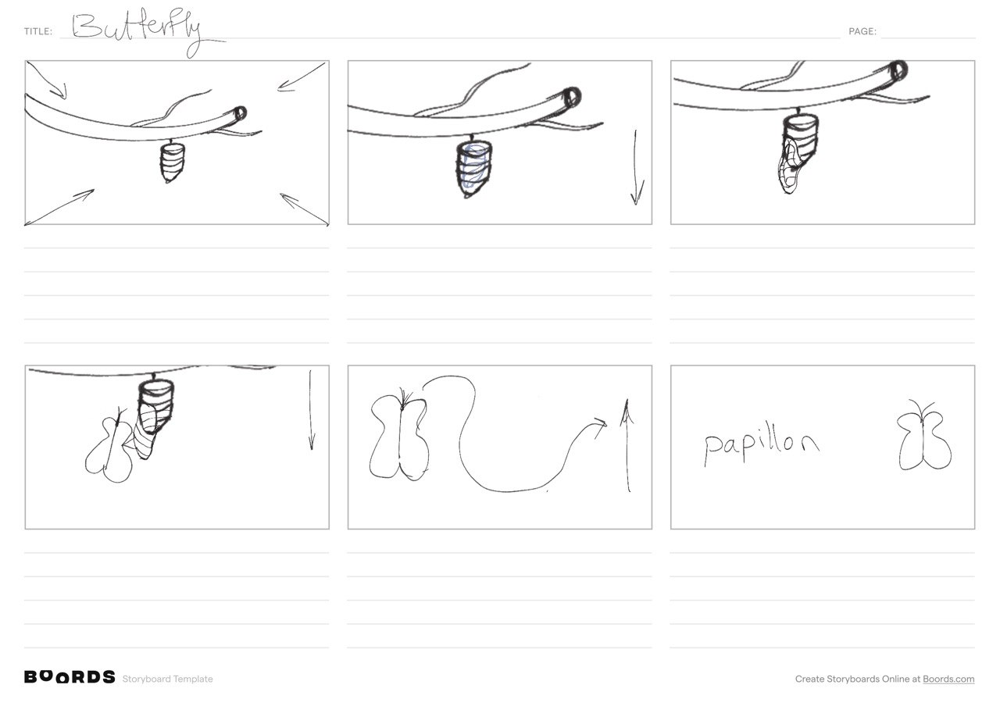
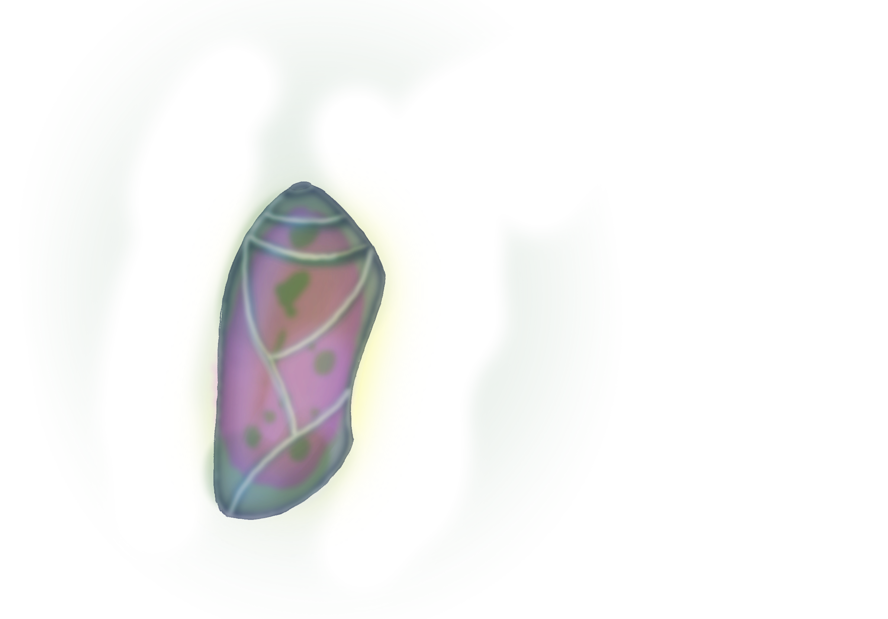

A quiet beginning.
A beautiful reveal.
From a cocoon on a branch to a butterfly in flight. A short transformation story for a clothing brand built around beauty and individuality.
- Brand
- Papillon · Clothing
- Discipline
- Logo motion & visual storytelling
- Format
- 5-second animation

Beauty, through
transformation.
Papillon’s brief centered on beauty and the feeling of being distinctive. The butterfly offered a natural way to express those ideas through motion.
I chose to begin with the cocoon. Revealing the butterfly gradually gives the final identity a small narrative: something quiet and enclosed becomes open, delicate, and free to move.
Six frames.
One clear journey.
The hand-drawn storyboard maps the sequence before the finished artwork. It establishes the cocoon, moves closer to the transformation, and follows the butterfly into the brand reveal.
- A cocoon hangs beneath a branch, establishing the scene.
- The view moves closer as the cocoon begins to open.
- The butterfly emerges and follows a curved flight path.
- The sequence resolves into the Papillon name and butterfly mark.

Building the two
sides of the story.
The cocoon and butterfly give the transformation its visual contrast. The cocoon has a compact, enclosed shape with layered color; the butterfly opens into broad, pale pink wings with fine vein details.
Seen together, the artwork makes the idea legible even before movement is added: enclosure gives way to openness, and the butterfly becomes the focus of the reveal.

The idea,
in motion.
The finished piece brings the transformation into a short logo animation, moving from cocoon to butterfly and into the final identity.
Watch on Aparat